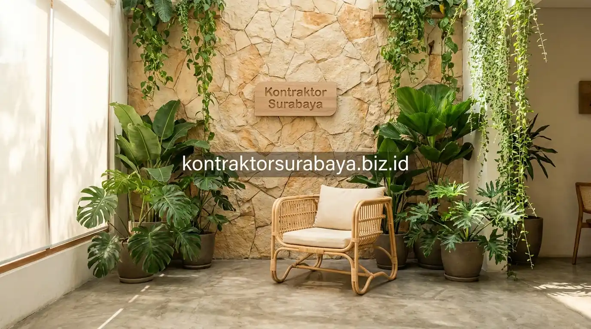

Tren industri food & beverage di Surabaya, khususnya di kawasan kuliner populer seperti Gubeng, Dharmahusada, MERR Rungkut, hingga Spazio Surabaya Barat, menuntut pemilik usaha cafe tidak hanya menyajikan menu berkualitas, tetapi juga menghadirkan pengalaman visual ruang yang memikat. Konsep modern tropis kini menjadi primadona karena mampu menciptakan atmosfer santai, sejuk, sekaligus sangat fotogenik untuk konten media sosial para pengunjung.
1. Elemen Desain yang Membuat Interior Cafe Fotogenik
Dinding aksen dengan tekstur unik, pencahayaan alami dari jendela besar, tanaman tropis dalam pot besar, dan sudut foto khusus adalah empat elemen yang paling sering membuat interior cafe terlihat fotogenik dan mengundang pengunjung untuk mengabadikan momen:
- Dinding Aksen Bertekstur Unik: Penerapan semen ekspos halus (stucco finish), batu bata terracotta, atau susunan batu alam bertekstur menjadi latar belakang foto selfie maupun flatlay menu makanan yang sangat artistik.
- Bukaan Kaca Lebar untuk Cahaya Alami: Memaksimalkan sinar matahari pagi hingga sore hari, menghasilkan pencahayaan alami yang lembut tanpa distorsi warna.
- Tanaman Tropis Pot Besar: Penggunaan tanaman seperti Monstera Deliciosa, Palem Kipas, dan Pisang-pisangan (Heliconia) dalam pot terakota menambah kesegaran visual yang kontras.
- Sudut Foto Khusus (Dedicated Photo Spot): Dilengkapi furnitur berkarakter kuat dan properti unik sehingga pengunjung dapat langsung berfoto tanpa harus repot mencari angle terbaik.

2. Material dan Warna Bernuansa Tropis Modern
Rotan, kayu natural, warna hijau dan terracotta, serta elemen anyaman adalah empat material dan palet warna yang paling sering digunakan untuk menghadirkan nuansa tropis modern yang hangat:
- Rotan Alami & Sintetis Berkualitas: Digunakan pada sandaran kursi, kap lampu gantung, atau partisi sekat semi-transparan yang menghadirkan tekstur natural khas pesisir tropis.
- Kayu Solid / Multiplek Motif Serat Kayu Terang: Diterapkan pada meja panjang komunal dan meja kasir (bar counter) untuk memberikan sentuhan hangat dan berkelas.
- Palet Warna Hijau Sage & Terracotta Hangat: Memperkuat atmosfer alami yang menenangkan pikiran di tengah iklim Surabaya yang cenderung panas.
- Anyaman Bambu & Jerami Estetik: Menambah detail visual pada plafon dan dinding aksen tanpa terkesan berlebihan.
3. Bagaimana Pencahayaan Memengaruhi Hasil Foto di Media Sosial?
Cahaya alami yang lembut dan merata umumnya menghasilkan foto dengan warna yang lebih natural dibanding pencahayaan buatan yang terlalu terang atau menghasilkan bayangan tajam (harsh shadows).
Cafe yang mengandalkan jendela kaca besar atau skylight atap transparan sebagai sumber cahaya utama pada siang hari cenderung menghasilkan foto pelanggan dengan warna kulit dan plating makanan yang terlihat segar natural. Sementara untuk operasional malam hari, penggunaan lampu dengan suhu warna hangat (warm white 2700K - 3000K) dan teknik indirect lighting tersembunyi mampu mempertahankan suasana nyaman yang konsisten.
4. Menata Sudut Foto (Photo Spot) tanpa Mengganggu Sirkulasi
Penempatan sudut foto di area yang tidak berada di jalur utama menuju kasir atau meja makan menjaga sirkulasi pelanggan tetap lancar meski ada pengunjung yang berhenti untuk berfoto.
Sudut foto idealnya ditempatkan pada ceruk sudut ruangan (alcove) atau area semi-outdoor dekat void taman tengah. Penataan ini memastikan ada jarak bebas minimal 1,2 meter dari lorong mobilitas staf barista dan pramusaji, sehingga aktivitas pemotretan konten tidak menghambat kelancaran operasional pelayanan cafe.
5. Elemen Tropis yang Menambah Kesan Segar dan Instagramable
Tanaman gantung, kolam kecil, void terbuka dengan atap tinggi, dan material bambu adalah empat elemen tropis tambahan yang memperkuat kesan segar dan instagramable:
- Tanaman Gantung pada Void Plafon: Menambah dimensi ketinggian ruang secara dramatis tanpa mengurangi luas lantai produktif untuk penempatan meja kursi.
- Fitur Kolam Mini / Gemericik Air: Menghadirkan efek relaksasi audio-visual yang meredam kebisingan lalu lintas jalan raya Surabaya.
- Void Atap Tinggi (High Ceiling): Meningkatkan efisiensi sirkulasi udara termal alami sehingga suhu dalam cafe tetap sejuk dan tidak pengap.
- Aksen Partisi Kisi-kisi Kayu/Bambu: Menciptakan permainan bayangan cahaya matahari (shadow play) yang sangat estetik saat siang hari.
6. Kesalahan yang Membuat Interior Cafe Terlihat Ramai Tapi Tidak Nyaman
Terlalu banyak elemen dekorasi dalam satu area, kursi yang berdempetan demi kapasitas maksimal, pencahayaan yang tidak konsisten, dan minim ventilasi adalah empat kesalahan yang sering terjadi:
- Dekorasi Berlebihan (Over-Decorating): Menjejalkan terlalu banyak pajangan dinding membuat ruangan terkesan sesak dan sulit difoto dengan sudut bersih.
- Kursi Berdempetan Terlalu Rapat: Mengurangi privasi percakapan pengunjung dan membuat pelanggan enggan berlama-lama memesan menu tambahan.
- Pencahayaan yang Belang-belang: Kombinasi lampu putih dingin di satu sudut dan lampu kuning redup di sudut lain membuat transisi visual tidak nyaman di mata.
- Ventilasi yang Buruk: Kurangnya exhaust fan pada cafe dengan banyak tanaman hidup dapat meningkatkan kelembapan udara sehingga ruangan terasa gerah.
"Interior cafe yang viral bukan sekadar tempat berfoto estetik, melainkan ruang yang membuat pengunjung merasa betah, nyaman berlama-lama, dan selalu ingin kembali berkunjung."
Setiap konsep cafe memiliki karakter brand dan segmentasi pasar yang unik. Oleh karena itu, kombinasi elemen desain modern tropis perlu dirancang khusus agar mencerminkan identitas visual bisnis Anda secara otentik. Lihat berbagai inspirasi tata ruang komersial lainnya pada galeri proyek kami, atau pelajari detail paket pengerjaan pada halaman jasa desain interior Surabaya.